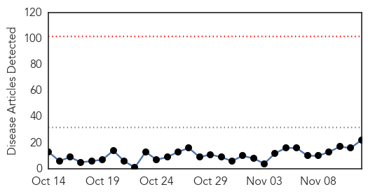
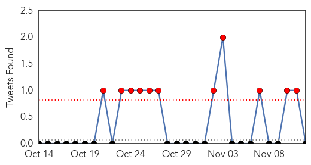
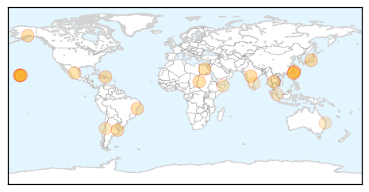

30 Day Trends
Web: 0 alerts, 0 warnings
Twitter: 11 alerts, 0 warnings
Top Articles:
- 0.997
- Dengue Fever – Egypt
- 0.995
- The number of people diagnosed with Dengue Fever rises in many provinces
- 0.994
- Sudan: Humanitarian Bulletin Issue 45
- 0.994
- 101 cases of dengue fever confirmed on Hawaii Island
- 0.993
- Zika virus reaches CARICOM; five cases confirmed
- 0.988
- Healthy humans can give dengue virus to mosquitos
- 0.985
- Brazil Probes Possible Link Between Zika Virus, Birth Defects
- 0.980
- Spotlight on dengue danger after actor stricken with disease, news, Health News, AsiaOne YourHealth
- 0.979
- Dengue fever cases in Kaohsiung remain high
- 0.974
- Dengue outbreak cases in Kaohsiung still peaking
- 0.973
- Health officials say dengue fever fight should be statewide effort
- 0.972
- Zika Virus Reaches the Caribbean Community
- 0.972
- Another 9 deaths from dengue confirmed in Taiwan
- 0.955
- Some residents worry response, outreach to dengue fever lacking
- 0.945
- Words and (in)actions; Residents see failings in state response to dengue fever
- 0.921
- DOH Launches “Fight The Bite”
- 0.898
- When Guns are Outlawed, Only Outlaws Will Have Mosquitos
- 0.726
- Illegals endanger our health
- 0.707
- UNICEF predicts El Niño will have adverse effects for Millions of people in Malawi, Zimbabwe and Ethiopia
- 0.613
- Fears sexual health cutbacks open door to HIV
- 0.607
- Patients, know your rights
- 0.583
- Flooded hospitals turn potential dengue-breeding sites in Chennai
Top Tweets:
-
No tweets found for Nov 12, 2015
Web/News Articles
Tweets
Article Locations
Article Confidences